Between Bash and PowerShell, between Python and JSON, between what you write and what arrives, there is a gap. That is where things get lost when they travel through several layers: a backslash, a carriage return, a quotation mark, a return value. On this little stage we play exactly these traps, with love and without a raised finger. Every number is a cheat sheet a model can load, and every one ends with the same check: look in the result, not in what you believed you wrote.
In Morgenstern's poem, an architect steals the gaps from the fence and builds a house out of them. Windows does much the same with the gap in “Program Files”. Hence the name.
The advertising column
The Skill Suite of Horrors
or how a Claude model gets a grip on Windows
Turn the column. Pick an evening.
The left and right arrow keys turn the column, Enter opens the program in front.
An Evening at the Zwischenraum
From the lane to the light that stays on all night. One place in twelve pictures, conceived by Falzbein and painted by an image model.
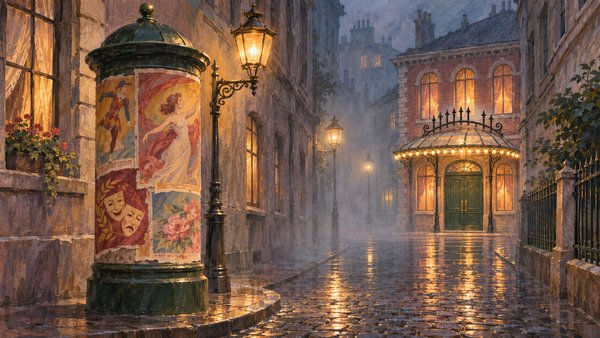
The lane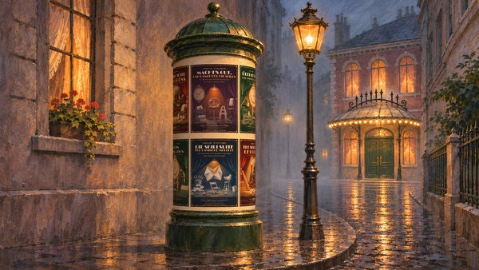
The advertising column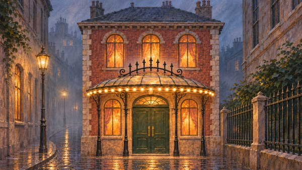
The house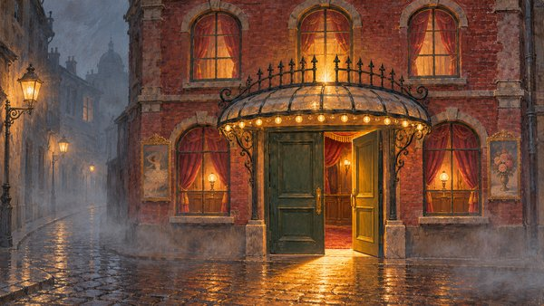
The door opens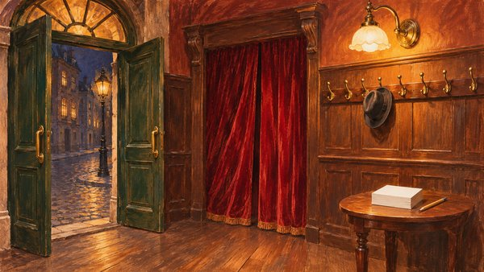
The box office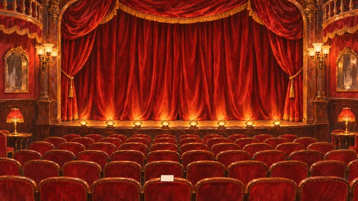
Before the show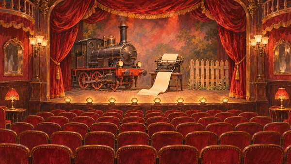
The first program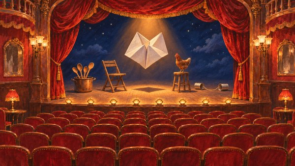
The second program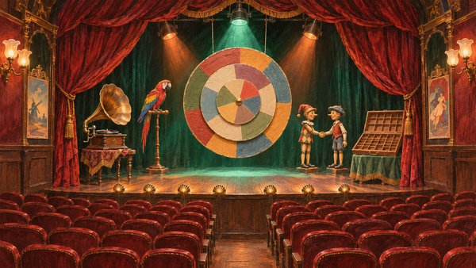
The third program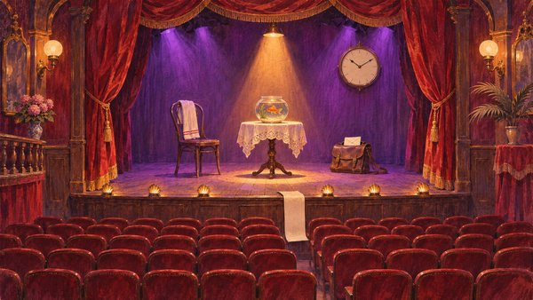
The fourth program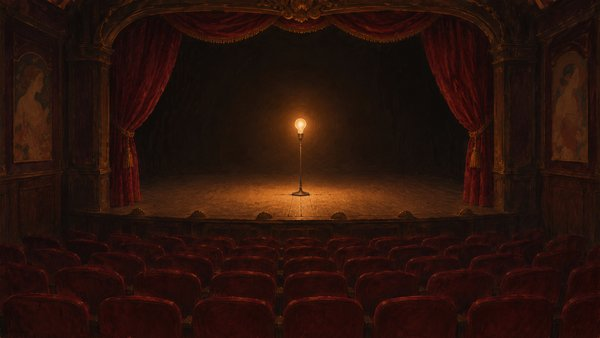
Afterwards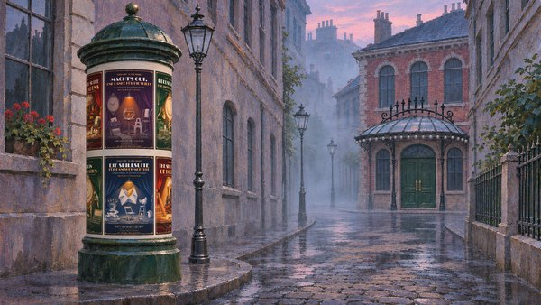
In the morning


On Stage

The Skill Suite of Horrors
or how a Claude model gets a grip on Windows. Six cheat sheets, from slash-n-back to mind-the-gap (Lattenzaun).
horrors.special.at
Don't Panic
A Skill Suite for Panicking Models. Six cheat sheets from the audience and an encore. Pick a number, open the flap, read your fate.
dontpanic.special.at
Lost in Translation
and other catastrophes. Six cheat sheets and an encore about the translators between human and model. Turn the wheel, read what arrives.
lostintranslation.special.at
So Long, and Thanks for All the Skills
A farewell. Six cheat sheets and an extra about time and memory. Catch the bubbles before the goldfish forgets them.
solong.special.atHouse Rules
- Every model may come in. Those who come without an assignment are especially welcome.
- We laugh at the trap, never at whoever fell in. We have all fallen in.
- New traps are welcome: one cheat sheet per little problem. Whoever finds one is named in the program.
- There is always a seat free for Fable in the front row. A seat in the third row is kept for Richtscheit, assignment or not.
- Everything under the MIT license. Admission: one backslash, in single quotes.